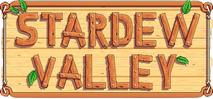

PERSONAGENS
ARTEFATOS
MINERAIS
ANIMAIS
LAVOURAS
BEM VINDO AO
STARDEW VALLEY WIKI 2.0
O melhor guia sobre o melhor jogo.
Pressione o botão para acessar as páginas.
PERSONAGENS
ARTEFATOS
MINÉRIOS
ANIMAIS
PLANTAÇÕES